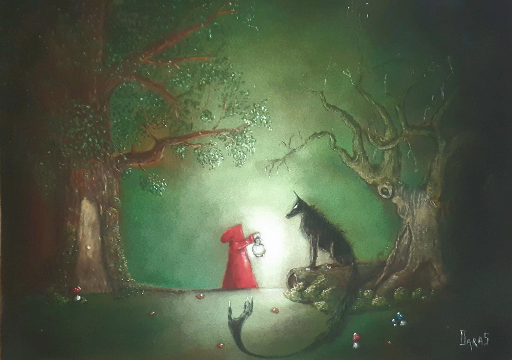

Imaginaire
Jürü Bürü
Jürü Bürü est un pastel réalisé en 2023 pour le groupe musical du même nom. En langue altaïque, Jürü Bürü signifie « la chevauchée du loup ». Inspirée de l'univers du Petit Chaperon rouge, l'œuvre revisite ce conte sous une forme symbolique et onirique. Au cœur d'une forêt silencieuse, une enfant éclaire la nuit tandis qu'un loup, immobile et menaçant, semble attendre. La scène suspend le temps et invite le spectateur à imaginer le récit qui relie ces deux figures emblématiques.
Demander des informations →← Retour à la galerie